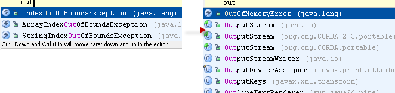

When you invoked Basic Completion (&shortcut:CodeCompletion;) in Java and didn't find your desired class in the list, it means
that it's not yet imported in the current file. Press &shortcut:CodeCompletion; once more to view all accessible classes.
